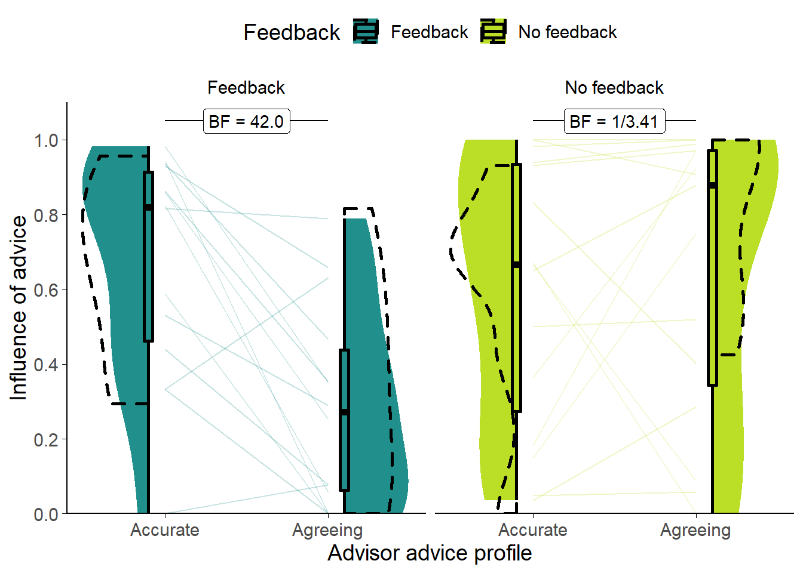

B Appendix 2: advice-taking in the Dates task
The advice-taking framework underlying this thesis§1.3 has some empirical support from previous work in our lab (Pescetelli and Yeung 2021). In those experiments, participants completed a perceptual decision-making task within a judge-advisor system. Participants provided a judgement (including a confidence rating) concerning which of two briefly presented boxes of dots contained more dots. They then received advice on the answer from an advisor and provided a final decision, again including a confidence judgement.
Pescetelli and Yeung (2021) showed that participants who received feedback on their decisions, which could in turn be used to evaluate the advisors, showed larger shifts in their confidence in the direction of advice from more accurate advisors. Participants who did not receive feedback showed similarly higher influence from advisors who tended to agree more often (i.e. whose advice indicated the same side that participants chose in their initial estimate). Both effects, accuracy and agreement, were present regardless of feedback, although the agreement effect was far more pronounced in the no feedback group than the feedback group, and the accuracy effect was more pronounced in the feedback than the no feedback group. Participants’ subjective assessments of the trustworthiness of the advisors roughly24 followed their behaviour: advisors who were more influential were rated as more trustworthy.
We aimed to replicate these results in a new paradigm. This new paradigm, the Dates task, was newly-implemented for this project. The Dates task was designed with several appealing features in mind: it was to be more similar to the tasks performed by participants in previous advice-taking experiments; it was to be shorter for participants to complete, and suitable for on-line delivery; and it was supposed to be more engaging for participants. We hoped this replication would accomplish two objectives: pilot our novel implementation and replicate the key advice-taking features reported by Pescetelli and Yeung (2021) using a different experimental task.
For this replication, we chose to directly contrast the tendency to prefer agreeing advisors over accurate ones where feedback was withheld with the tendency to prefer accurate advisors over agreeing ones where feedback was available.
B.1 Experiment 0: extending results to the Dates task
B.1.0.1 Open scholarship practices
This experiment was preregistered at https://osf.io/fgmdw.
This is a replication of a study of identical design that produced the same results.
The data for both this and the original study can be obtained from the esmData R package (Jaquiery 2021c).
A snapshot of the state of the code for running the experiment at the time the experiment was run can be obtained from https://github.com/oxacclab/ExploringSocialMetacognition/blob/f90b6f9266a901211a4ddb7b5ee1de1c74e8df57/ACv2/index.html.
B.1.0.2 Method
37 participants each completed 42 trials over 3 blocks of the continuous version of the Dates task§2.1.3.2.2. On each trial, participants were presented with an historical event that occurred on a specific year between 1900 and 2000. They were asked to drag one of three markers onto a timeline to indicate the date range within which they thought the event occurred. The three markers each had different widths, and each marker had point value associated with it, with wider markers worth fewer points. The markers were 1, 3, and 9 years wide, being worth 27, 9, and 3 points respectively. Participants then received advice indicating a region of the timeline in which the advisor suggested the event occurred. This advice came from one of two advisors (as defined in detail below): one characterised by high objective accuracy and one characterised by a high degree of agreement with the participant’s initial judgement. Participants could then mark a final response in the same manner as their original response, and could choose a different marker width if they wished.
Participants started with 1 block of 10 trials that contained no advice to allow them to familiarise themselves with the task. All trials in this section included feedback for all participants indicating whether or not the participant’s response was correct.
This block ended with 2 trials with a practice advisor to get used to receiving advice. Participants also received feedback on these trials. They were informed that they would “get advice on the answers you give” and that the feedback they received would “tell you about how well the advisor does, as well as how well you do.” Before starting the main experiment they were told that they would receive advice from multiple advisors and that “advisors might behave in different ways, and it’s up to you to decide how useful you think each advisor is, and to use their advice accordingly.”
Participants then performed 2 blocks of trials that constituted the main experiment. In each of these blocks participants had a single advisor for 14 trials, plus 1 attention check.
Participants were assigned randomly into one of two conditions that determined whether or not they received feedback during the main experiment. The first order in which advisors were encountered was counterbalanced between participants and across conditions. For each advisor, participants saw the advisor’s advice on 14 trials. Advice was probabilistic: on each trial there was an 80% chance the advisor gave advice according to the advice profile (detailed below). Otherwise, the advisors issued the same kind of advice as one another, chosen to neither agree with the participant’s answer nor indicate the correct answer. This “Off-brand” advice was used to control for the effects of advice when the influence of advice was the dependent variable. These trials are the key ones for analysis because they allow us to assess the influence of each advisor’s advice, while matching the overall properties of that advice (i.e. objective accuracy and nearness to the participant’s initial estimate).
B.1.0.2.1 Advice profiles
The High accuracy and High agreement advisor profiles defined marker placements based on the timeline based on the correct answer and the participant’s initial estimate respectively. Both advisors used markers that spanned 7 years, and both placed the markers in a normal distribution around the target point with a standard deviation of 5 years, but they differed in the central ‘target point’ around which this distribution was centred.. The target point for the High accuracy advisor was the correct answer, whereas the target point for the High agreement advisor was the participant’s initial estimate. Neither advisor ever placed their marker exactly on the midpoint of the participant’s marker (because doing so means the weight on advice statistic is undefined).
Each advice trial had a 20% chance of being designated “Off-brand.” On these trials advisors neither indicated the correct answer nor agreed with the participant. This was achieved by picking a target point of the participant’s answer reflected around the correct answer. Thus, if the centre of the participant’s initial estimate was 1955, and the correct answer was 1945, the target point would be 1935. In some cases there was not enough of the scale left once this reflection had taken place. If the centre of a participant’s initial estimate was 1960, and the correct answer was 1990, the target point could not be 2020, because the scale only went up to 2010. Where this occurred, advisors issued answers that were twice as wrong as the participant’s answer, in the same direction. In this case, that would mean the new target point was 1930.
B.1.0.3 Results
B.1.0.3.1 Exclusions
In line with the preregistration, participants’ data were excluded from analysis where they failed attention checks, failed to complete the entire experiment, or had more than 2 outlying trials. Outlying trials were calculated after excluding participants who failed to complete the experiment, and were defined as trials for which the total trial time was greater than 3 standard deviations away from the mean of all trials from all participants. Table ?? shows the number of participants excluded for each of the reasons, broken down by experimental condition.
A browser compatibility issue in this study meant that any participants completing the study using the Safari family of browsers had to be excluded because the advice was not presented appropriately.
| Reason | Feedback | No feedback | Total |
|---|---|---|---|
| Attention check | 5 | 1 | 6 |
| Unfinished | 1 | 1 | 2 |
| Too many outlying trials | 0 | 1 | 1 |
| Missing offbrand trial data | 0 | 1 | 1 |
| Total excluded | 5 | 3 | 8 |
| Total remaining | 19 | 18 | 37 |
B.1.0.3.2 Task performance
![Response error for Experiment 0.<br/> Faint lines show individual participant mean error (the absolute difference between the participant's response and the correct answer), for which the violin and box plots show the distributions. The dashed line indicates chance performance. Dotted violin outlines show data from the original study which this is a replication. The dependent variable is error, the distance between the correct answer and the participant's answer; lower values represent better performance. The theoretical limit for error is around 100.](_main_files/figure-html/ai-ava-r-performance-acc-1.png)
Figure B.1: Response error for Experiment 0.
Faint lines show individual participant mean error (the absolute difference between the participant’s response and the correct answer), for which the violin and box plots show the distributions. The dashed line indicates chance performance. Dotted violin outlines show data from the original study which this is a replication. The dependent variable is error, the distance between the correct answer and the participant’s answer; lower values represent better performance. The theoretical limit for error is around 100.
![Error by marker width for Experiment 0.<br/> Faint lines show individual participant mean error (distance from the centre of the participant's marker to the correct answer) for each width of marker used, and box plots show the distributions. Some participants did not use all markers, and thus not all lines connect to each point on the horizontal axis. Grey box plots show data from the original experiment. The faint black points indicate outliers. Grey bars show half of the marker width: mean error scores within this range mean the marker covers the correct answer.](_main_files/figure-html/ai-ava-r-performance-conf-1.png)
Figure B.2: Error by marker width for Experiment 0.
Faint lines show individual participant mean error (distance from the centre of the participant’s marker to the correct answer) for each width of marker used, and box plots show the distributions. Some participants did not use all markers, and thus not all lines connect to each point on the horizontal axis. Grey box plots show data from the original experiment. The faint black points indicate outliers. Grey bars show half of the marker width: mean error scores within this range mean the marker covers the correct answer.
Participants had lower error on final decisions than on their initial estimates (F(1,28) = 102.57, p < .001; MInitial = 16.45 [14.51, 18.39], MFinal = 11.26 [9.72, 12.81]), indicating improved performance after seeing advice. They also had lower error on their answers with the High accuracy advisor (main effect of advisor across both responses: F(1,28) = 44.75, p < .001; MHighAgreement = 16.89 [14.70, 19.09], MHighAccuracy = 10.82 [9.24, 12.41]). As expected, there was an interaction: participants reduced their error much more following advice from the High accuracy advisor (F(1,28) = 74.50, p < .001; MReduction|HighAgreement = 1.06 [0.45, 1.67], MReduction|HighAccuracy = 9.32 [7.38, 11.25]; Figure B.1).
Generally, we expect participants to be more confident on trials on which they are correct compared to trials on which they are incorrect. Confidence can be measured by the width of the marker selected by the participant. Where participants are more confident in their response, they can maximise the points they receive by selecting a thinner marker. Where participants are unsure, they can maximise their chance of getting the answer correct by selecting a wider marker. Participants’ error was lower for each marker width in final decisions than initial estimates (Figure B.2). For both initial estimates and final decisions, error was higher for wider markers than for narrower ones.
B.1.0.3.3 Advisor performance
The advice is generated probabilistically so it is important to check that the advice experienced by the participants matched the experience we designed. On average, the High accuracy advisor had lower error than the High agreement advisor (t(28) = -12.95, p < .001, d = 3.37, BFH1:H0 = 3.0e10; MHighAccuracy = 3.88 [3.49, 4.27], MHighAgreement = 16.99 [14.93, 19.05]), and their advice was further away from the participants’ initial estimates than the High agreement advisor’s (t(28) = 9.66, p < .001, d = 2.00, BFH1:H0 = 5.0e7; MHighAccuracy = 17.80 [15.58, 20.02], MHighAgreement = 7.77 [6.24, 9.29]). 29/29 (100.00%) participants experienced the High accuracy advisor as having lower average error than the High agreement advisor, and 27/29 (93.10%) participants experienced the High agreement advisor as offering advice closer to their initial estimates than the High accuracy advisor. Overall, this indicates that the manipulation was implemented as planned.
B.1.0.3.4 Hypothesis test

Figure B.3: Dates task advisor influence for High accuracy/agreement advisors.
Shows the influence of the advice of the advisors. The shaded area and boxplots indicate the distribution of the individual participants’ mean influence of advice. Individual means for each participant are shown with lines in the centre of the graph. The dashed outline shows the distribution of participant means in the original study of which this is a replication.
## Warning: Data is unbalanced (unequal N per group). Make sure you specified a
## well-considered value for the type argument to ezANOVA().## Interaction calculation: Accurate - AgreeingThere were systematic differences in the influence of advice on the Key trials where the advice itself was balanced between advisors (Figure B.3. A 2x2 mixed ANOVA of Advisor (within) by Feedback (between) indicated that the Accurate advisor was more influential than the Agreeing advisor (F(1,27) = 5.10, p = .032; MAccurate = 0.63 [0.51, 0.76], MAgreeing = 0.47 [0.33, 0.62]), and this was more extreme in the Feedback than the No feedback condition (F(1,27) = 9.72, p = .004; MAccurate-Agreeing|Feedback = 0.38 [0.19, 0.58], MAccurate-Agreeing|NoFeedback = -0.05 [-0.28, 0.17]). There was no significant difference between the Feedback and No feedback groups overall (F(1,27) = 2.02, p = .167; MFeedback = 0.48 [0.34, 0.61], MNoFeedback = 0.62 [0.45, 0.80]). As shown in the Bayesian statistics on the graph (Figure B.3), there was good evidence that the advisors were differently influential in the Feedback condition (t(13) = 4.27, p < .001, d = 1.34, BFH1:H0 = 42.0; MAccurate|Feedback = 0.67 [0.50, 0.84], MAgreeing|Feedback = 0.29 [0.13, 0.44]), and adequate evidence that they were not different in the No feedback condition (t(14) = -0.50, p = .626, d = 0.14, BFH1:H0 = 1/3.41; MAccurate|!Feedback = 0.60 [0.40, 0.80], MAgreeing|!Feedback = 0.65 [0.44, 0.86]).
B.1.1 Discussion
The purpose of this experiment was twofold: to pilot a novel implementation of a Judge-Advisor System paradigm; and to determine whether the key advice-taking effects identified by Pescetelli and Yeung (2021) are visible using a different experimental task. The first of these was successful, the second was more mixed.
We were able to provide advice to participants in an interface that they could understand, and to vary advice according to the key dimensions of accuracy and agreement (similarity) as desired. This was a pleasing result because the experiment was substantially shorter than our other approach, making it more enjoyable for participants and cheaper for us, and we had less precise control over participants’ answers, making it harder to gauge how participants would experience the task. The behaviour of participants given feedback illustrated that they attended to the advice and they discriminated between advice that provided information and advice that provided support but no information.
The latter result provides a conceptual replication of the results found by Pescetelli and Yeung (2021), especially combined with the observation that where feedback is unavailable, people do not appear to distinguish between useful and supportive advice. Nevertheless, the results are not wholly consistent with an account of advice-taking in which people use agreement to evaluate advisors in the absence of feedback. Under such an account, we would expect participants in the No feedback condition to have shown a greater susceptibility to advice from the Agreeing advisor, but this did not happen.
One explanation for this discrepancy may be that it is possible that different people have differing preferences for agreeing versus non-redundant advice, particularly where the task is hard and participants are lacking information with which to judge their own and others’ performance (as in the No Feedback condition). Another explanation for the equivalence of the influence of the advisors in the No feedback condition may be a consequence of relatively high levels of advice influence overall, producing a ceiling effect (the numerical advantage for the Agreeing advisor is as predicted by the theory). The relatively high levels of advice influence are a feature of the Dates task; the questions are difficult for most participants and consequently participants are likely to take more advice (Gino and Moore 2007; Yonah and Kessler 2021). A third possible explanation for the equivalence of influence between the advisors is that participants may not have had enough exposure to the advisors to properly learn about the value of their advice. The limitation on exposure is another feature of the Dates task: while the Dots task provides participants with many tens of trials in which to update their assessment of advisors, the Dates task provides a level of exposure more similar to normal social interaction (although not necessarily very similar).
Like its counterpart in the Dots task (Pescetelli and Yeung 2021), the design of this experiment deliberately violated an assumption which may be generally true in real life, that the advice is sufficiently independent as to convey at least some information regarding the correct answer. Had we told participants that the agreeing advisor would agree with them no matter what they the participants said, the participants may have disregarded the advice. Nevertheless, the results show that, even where they would have performed objectively better by preferring accurate over agreeing advice, participants were not able to detect the more accurate advice without objective feedback.
The results were only partially compatible with those of Pescetelli and Yeung (2021). In the Feedback condition, we saw, as expected, a much greater influence of advice from the Accurate advisor. In the No feedback condition, however, the influence of the advisors appeared to be equivalent. We did demonstrate that this paradigm is capable of measuring influence differences.